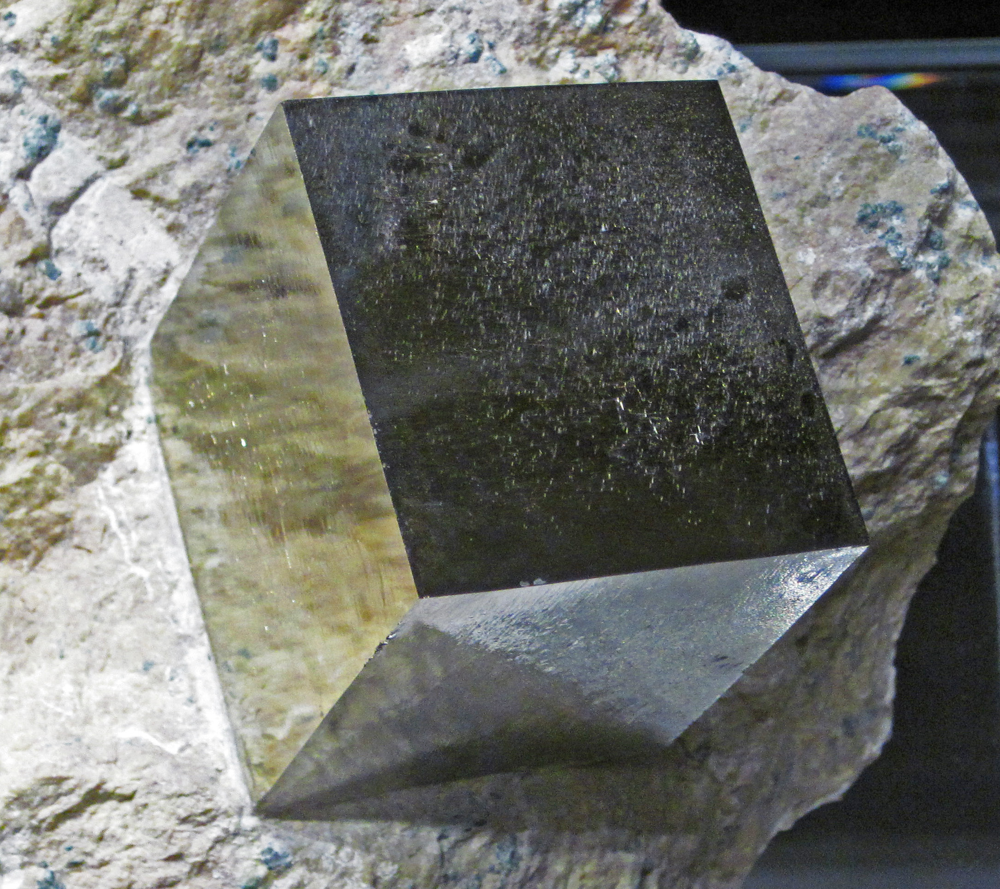
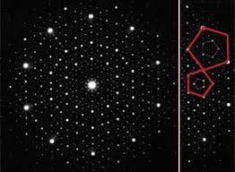
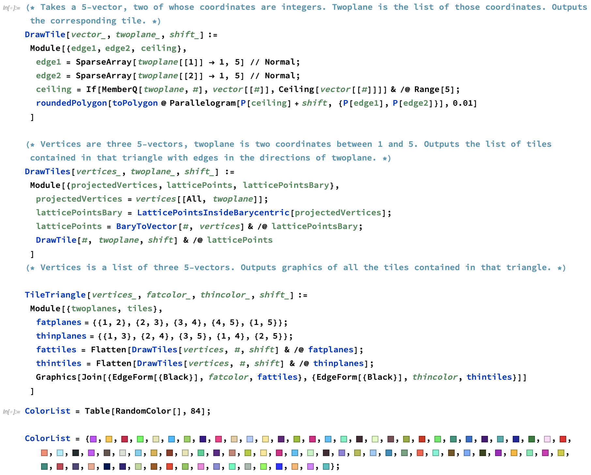
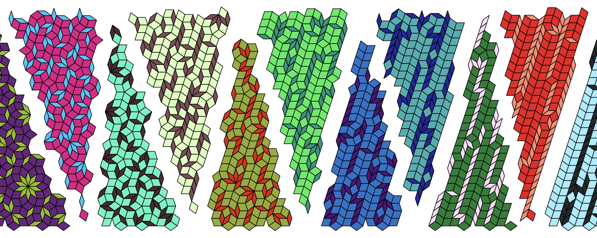
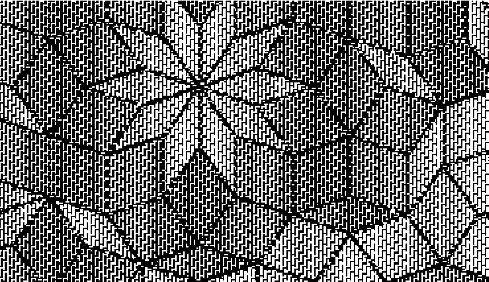
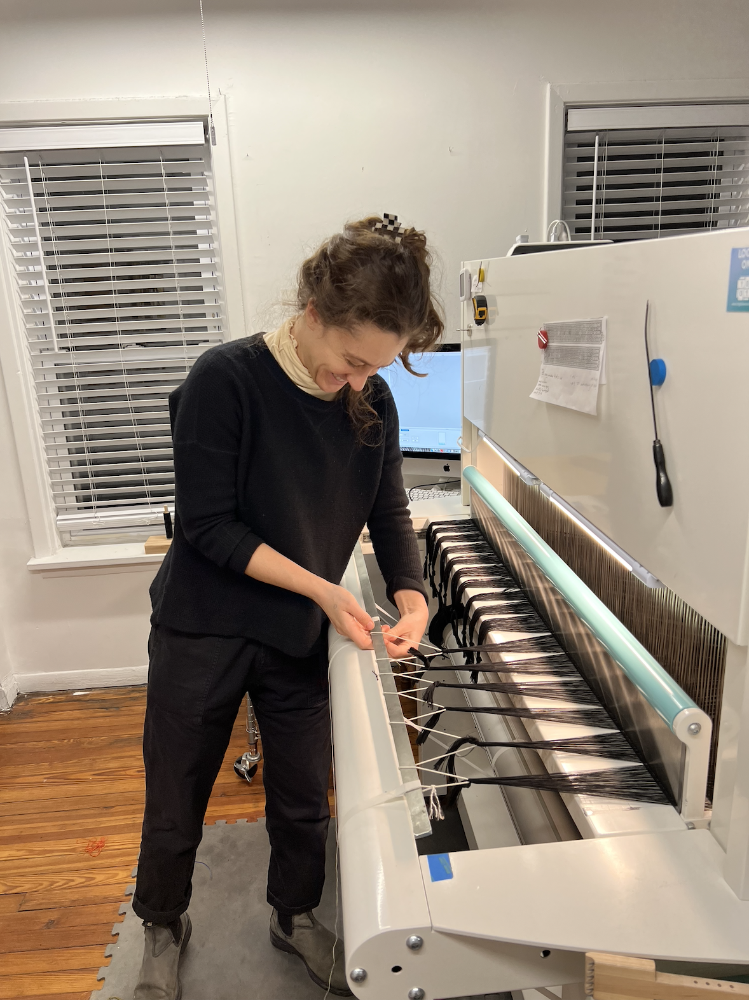
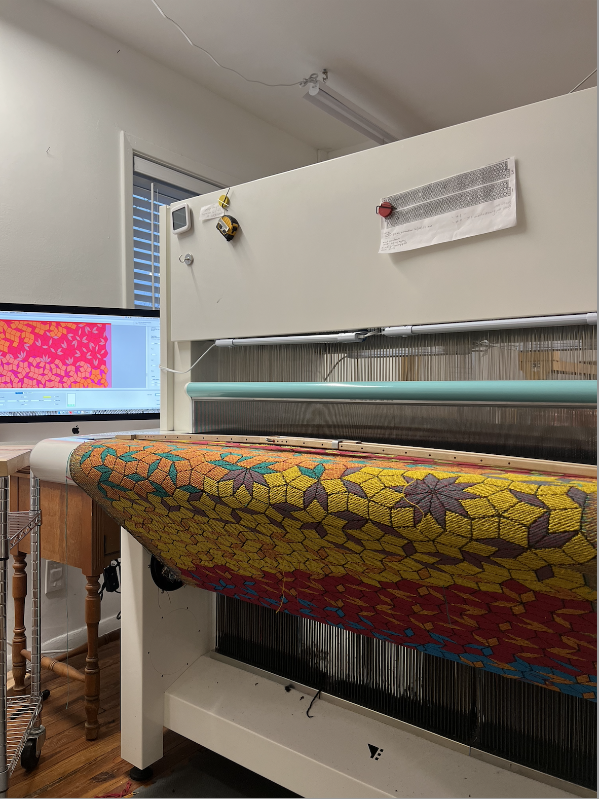
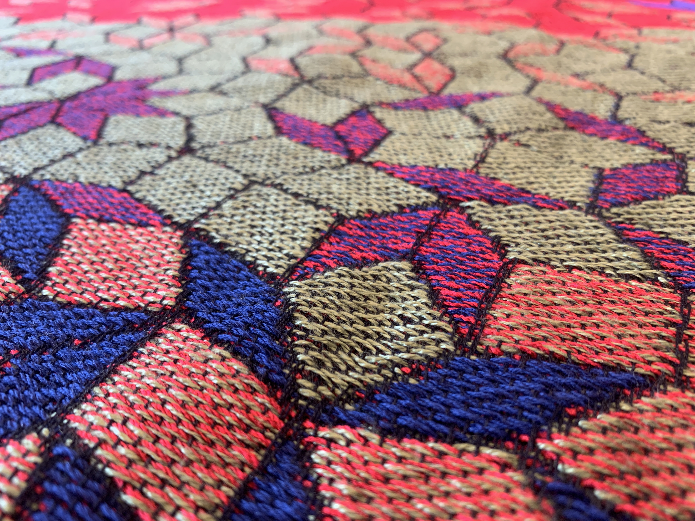
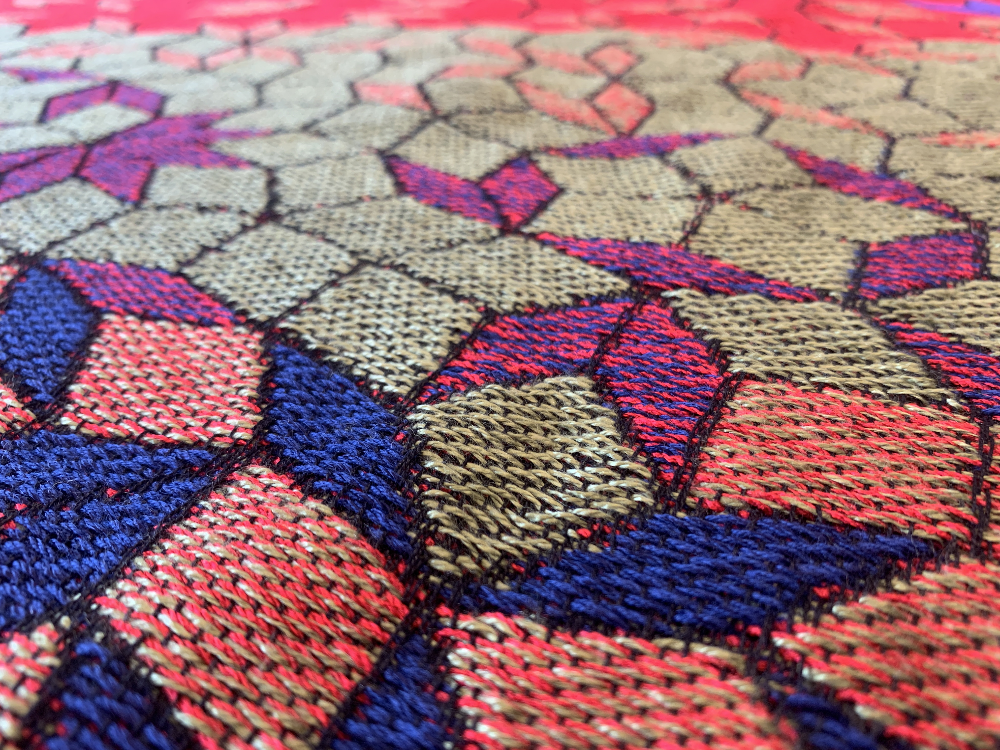

"Weaving Quasicrystals" is a series of wall works and large-scale installations that explore the technical connections between weaving, mathematics, and color theory. It was created in collaboration with artist Victoria Manganiello and produced with support from the National Science Foundation grant DMS-2201221, and the Mathematisches Institut in Bonn. It is based on unpublished mathematical work, joint with Peter Smillie.

The mathematical origins of the project concern the moduli spaces of quintic differentials. Unlike moduli spaces of abelian, quadratic, cubic, quartic, and sextic differentials (i.e. 1-, 2-, 3-, 4-, 6-differentials), the strata of quintic differentials cannot admit an equidistributed set which is locally a lattice in period coordinates.
This is due to the crystallographic restriction. Why does a snowflake always have 6-fold symmetry? It is because ice molecules pack into a regular hexagonal grid, or crystal. The microscopic structure of ice informs the macroscopic shapes which are produced. The same phenomenon happens for precious gemstones, and explains why emerald grows in a hexagonal prism, or why pyrite forms a perfect cube. Any pattern on a two-dimensional surface which repeats periodically exhibits 1-, 2-, 3-, 4-, or 6-fold rotational symmetry.

Quasicrystals were first discovered by mathematicians. Like crystals, they are made of some fixed set of tiny constituent parts, or tiles. But unlike crystals, they never repeat periodically. A mathematician Hao Wang and his student Robert Berger were the first to construct a set of tiles which can be used to cover the entire two-dimensional plane, but in a way that necessarily never repeats. Their work was simplified and popularized by physicist Roger Penrose, who came up with what are now called “Penrose tilings”. The pattern can be infinitely extended but only in a manner which is non-repeating!
These patterns, which one could imagine growing like a crystal but never precisely repeating, are called quasicrystals. Their platonic existence was, by the 1960’s, a mathematically established fact. But quasicrystals had never been observed in nature, and it became a pursuit of chemists to see whether these amazing structures existed in some physical material. Amazingly, in 1984 Dan Schechtman discovered a material whose x-ray crystallography showed 5-fold symmetry! Due to the crystallographic restriction, it could not be a crystal.

The discovery was shocking to the chemistry community, leading to a bitter debate between Schechtman and Linus Pauling (a famous crystallographer and scientist who is the only individual to have two unshared Nobel Prizes). Pauling couldn’t believe such a material existed in nature and famously said, “There is no such thing as quasicrystals, only quasi-scientists.” Pauling continued to disparage Schechtman’s work until his death. But Schechtman’s research was ultimately proven valid, receiving a Nobel Prize in 2011.
There are a lot of parallels between crystals, quasicrystals, and weaving, especially the idea that the microscopic structure of a material guides its overall shape. I met Victoria while travelling about 10 years ago and had followed her art career with great interest, especially her explorations of the intersection of technology and weaving, such as the project computer1.0. When I applied for an NSF grant, we carved out funding to produce the large-scale work, the one shown in the first image above.
The process of creating the work began with making designs in Mathematica, using a program that Peter Smillie and I had written some years ago to explore Penrose tilings of closed surfaces. The mathematical underpinnings of the construction go back to Nicolaas Govert de Bruijn, a very talented mathematician who was the first to classify the space of all Penrose tilings in the plane. In short, one takes a 5-dimensional cubical lattice, and embeds a 2-dimensional, possibly curved surface inside the ambient vector space R^5. Reading off which 5-cells the surface intersects dictates the construction of tiling in the plane, whose vertices correspond to the 5-cells, whose edges are 5th roots of unity, and whose 2-cells are rhombi. For certain linear surfaces in R^5, these gave the Penrose tilings, and our constructions were based on curving this surface.


Once the initial designs were made, Victoria was able to convert them into a weaving pattern. Weaving involves attaching a strand to a shuttle (the weft) and moving it horizontally back-and-forth through a collection of vertical strands kept under tension (the warp). The weaving program consists of a huge, rectangular bitmap, which dictates whether the weft goes over or under the warp. But one is faced with some puzzles, if the goal is to produce a figure with multiple colors and non-rectilinear patterns. These are solved in very clever ways, using multiple shuttles, and intricate fill patterns for the bitmap.

For such a complicated bitmap, one requires technology, as inputting the new register of bits for each pass of the shuttle would be prohibitively slow. This technology is the Jacquard loom, a progenitor of the modern computer, and the origin of the punch card (initially envisioned by Ada Lovelace and Charles Babbage). In spring of 2023, Victoria and I rented time on a Jacquard loom in Cleveland, Ohio (they are few and far between) from the Praxis Fiber Workshop. It took essentially four continuous days of work, to pass the shuttle by hand over 14000 times through the warp. The piece was recently shown at the Luchsinger Gallery at the Greenwich Academy in Greenwich, Connecticut, a preparatory school for girls.



 

After moving to Bonn, Victoria and I used funding from my start-up grant to create a series of works which hang in the Bonn Math Library. This time, we collaborated with textile-manufacturer Tisca to fabricate the pieces, producing much more material than our initial run. These weavings explore the space between periodic and aperiodic tilings, by deforming the 2d surface in 5d space so that it occasionally lines up with the period directions of the unit cube tiling in R^5.


As we continue to explore this connection between art and mathematics, please feel free to reach out to us, if you would be interested in displaying one of the tapestries at your instutitution (mathematical, artistic, or otherwise).